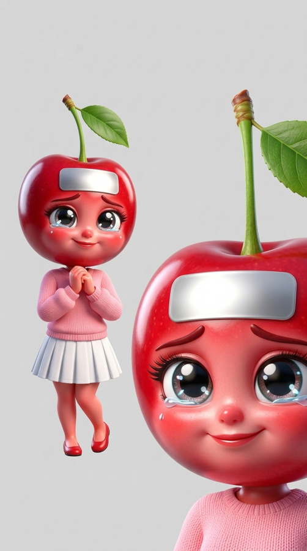
Capítulo 1 · La curita plateada
15 tomas · ~2:00 · Piloto · producir primero
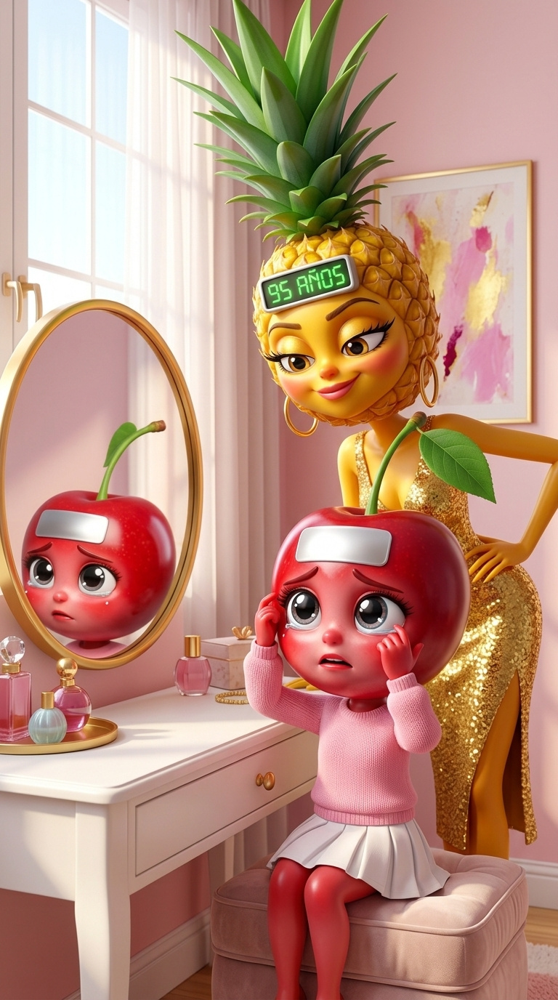
Mantén presionada la imagen para guardarla. En Flow súbela como fotograma inicial y elige 8s de duración.
Cerecita: "Hoy cumplo 18… ¿y si debajo hay un cero?"
Archivo:
TAPA_E01_S01_v01.mp4
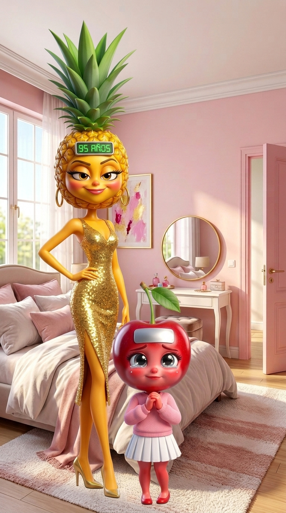
Mantén presionada la imagen para guardarla. En Flow súbela como fotograma inicial y elige 8s de duración.
Piña: "Seguro que sí. Por algo la abuela te tapó."
Archivo:
TAPA_E01_S02_v01.mp4
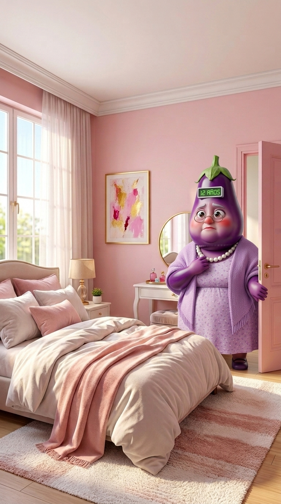
Mantén presionada la imagen para guardarla. En Flow súbela como fotograma inicial y elige 8s de duración.
Abuela: "Te tapé para salvarte, no por vergüenza. Yo vi tu número."
Archivo:
TAPA_E01_S03_v01.mp4
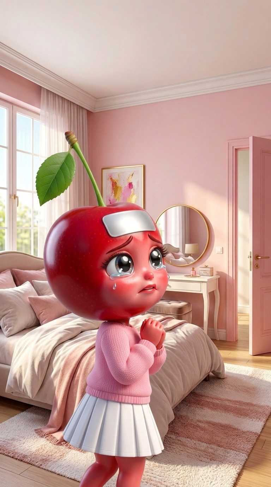
Mantén presionada la imagen para guardarla. En Flow súbela como fotograma inicial y elige 6s de duración.
Cerecita: "¿Y cuánto tengo, abuela?"
Archivo:
TAPA_E01_S04_v01.mp4
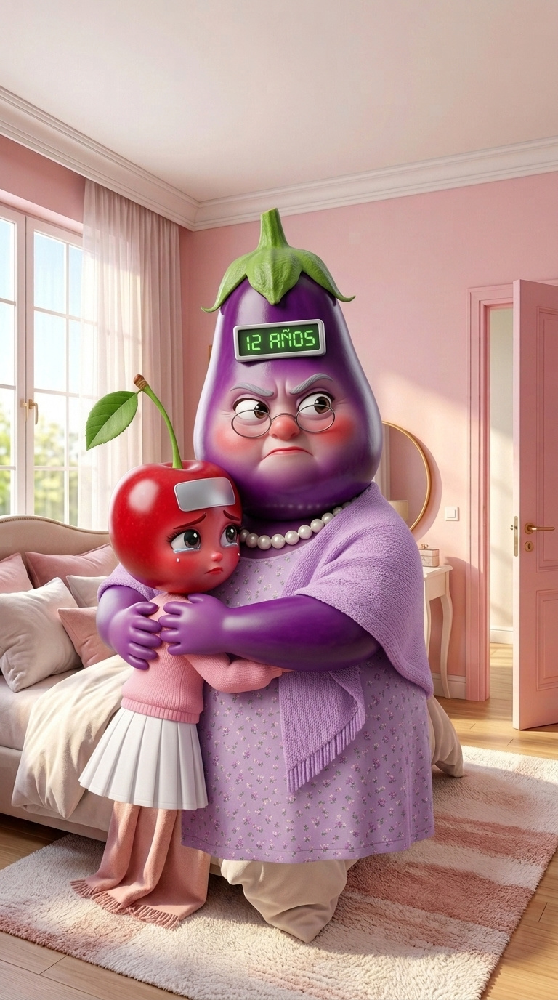
Mantén presionada la imagen para guardarla. En Flow súbela como fotograma inicial y elige 8s de duración.
Abuela: "Naciste de noche, mi cielo. Esta noche lo verás."
Archivo:
TAPA_E01_S05_v01.mp4
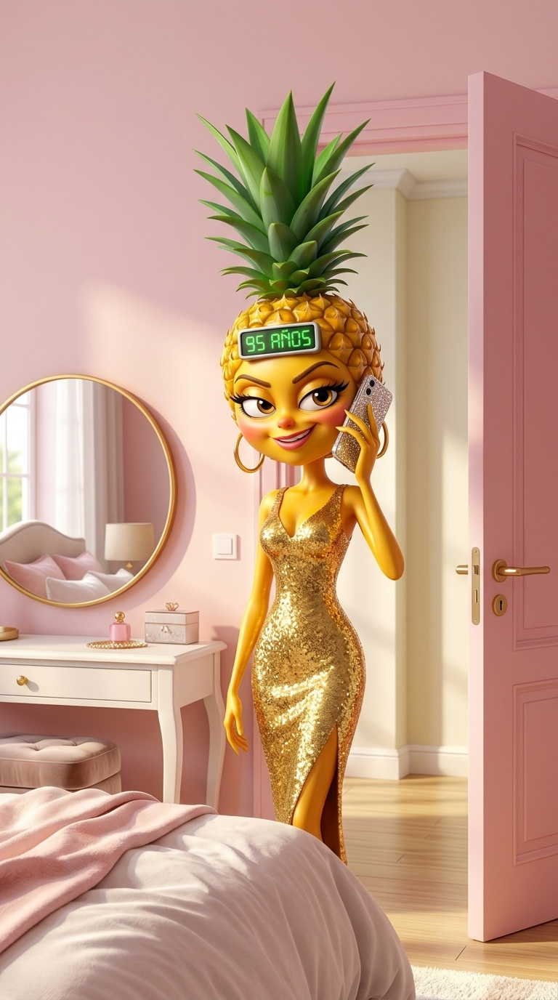
Mantén presionada la imagen para guardarla. En Flow súbela como fotograma inicial y elige 8s de duración.
Piña: "Don Ajo, esta noche se la quita. Venga por sus años."
Archivo:
TAPA_E01_S06_v01.mp4
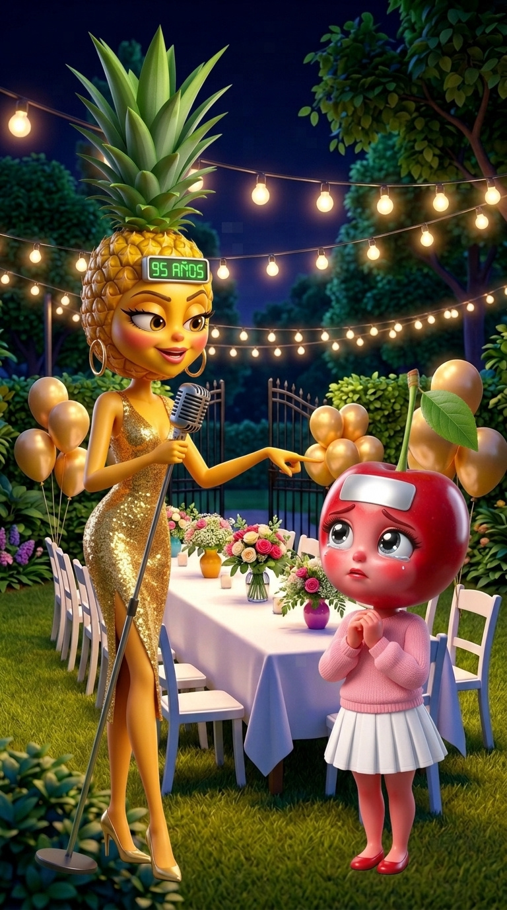
Mantén presionada la imagen para guardarla. En Flow súbela como fotograma inicial y elige 8s de duración.
Piña: "¡Vecinos! Hoy mi hermana se quita la curita. Yo apuesto: cero."
Archivo:
TAPA_E01_S07_v01.mp4
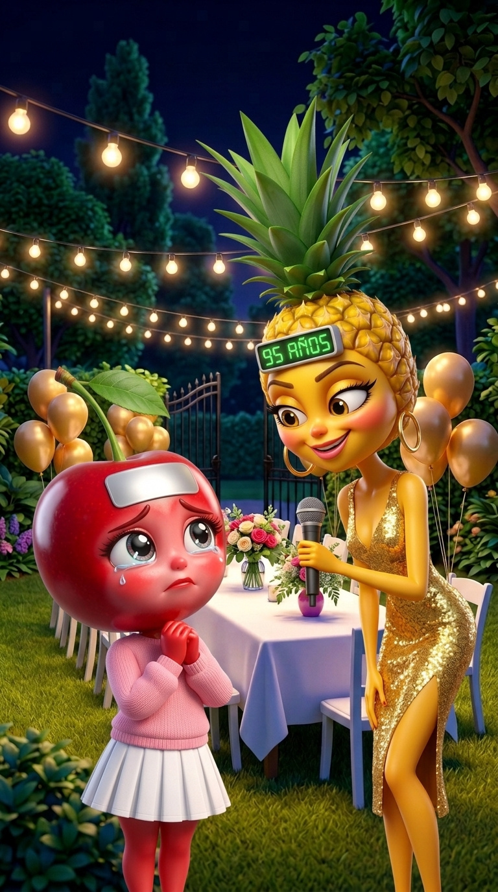
Mantén presionada la imagen para guardarla. En Flow súbela como fotograma inicial y elige 8s de duración.
Cerecita: "Piña, es mi cumpleaños."
Archivo:
TAPA_E01_S08_v01.mp4
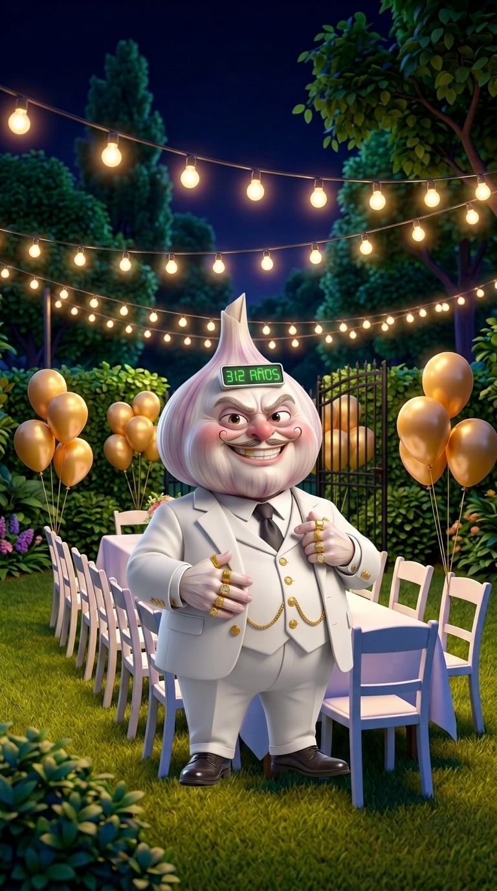
Mantén presionada la imagen para guardarla. En Flow súbela como fotograma inicial y elige 8s de duración.
Don Ajo: "Y si tiene muchos años, yo se los compro."
Archivo:
TAPA_E01_S09_v01.mp4
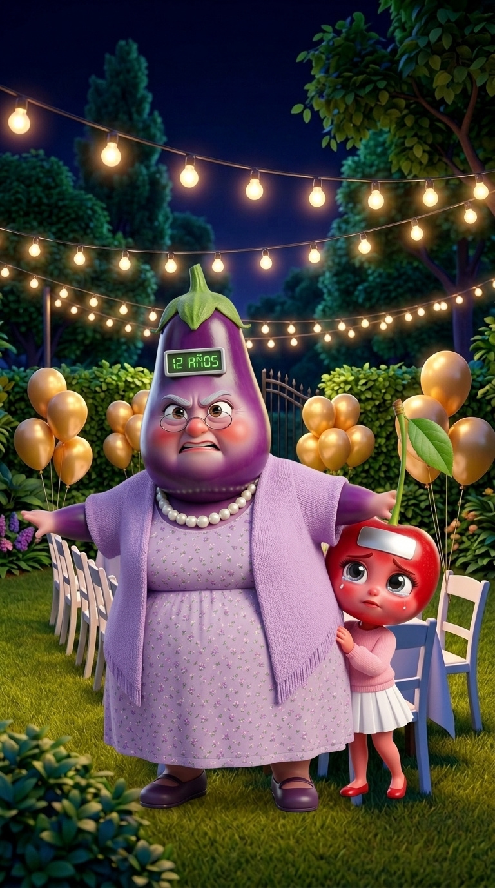
Mantén presionada la imagen para guardarla. En Flow súbela como fotograma inicial y elige 8s de duración.
Abuela: "¡Ajo, fuera! Hace dieciocho años te dije que no."
Archivo:
TAPA_E01_S10_v01.mp4
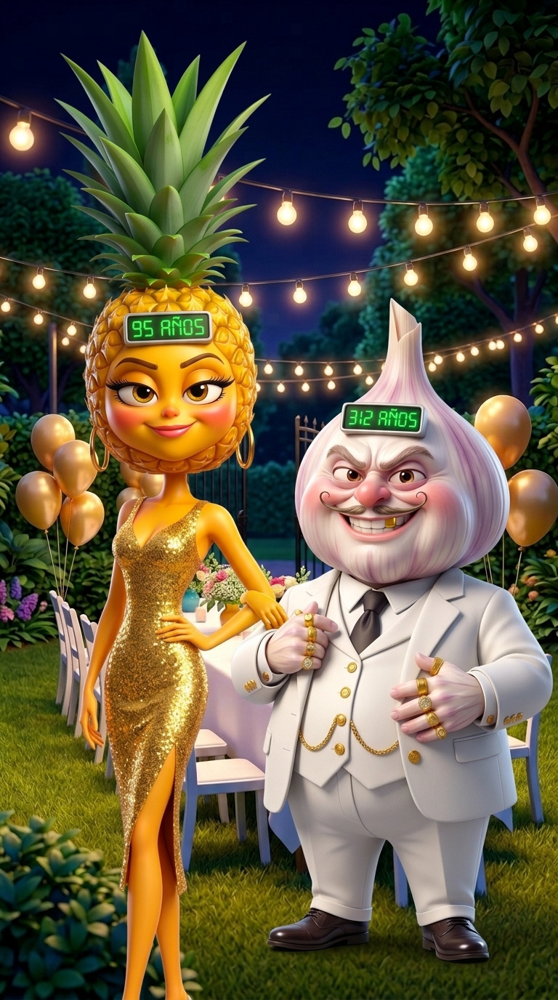
Mantén presionada la imagen para guardarla. En Flow súbela como fotograma inicial y elige 8s de duración.
Piña: "Yo lo invité. Si tiene cero, me río. Si no, cobro."
Archivo:
TAPA_E01_S11_v01.mp4
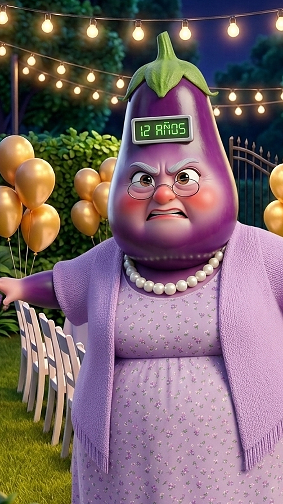
OJO: Esta toma arranca donde termina la 10: en Flow abre el clip TAPA_E01_S10, ve al último cuadro y usa «Guardar fotograma» como fotograma inicial. La imagen de aquí es solo de referencia.
Mantén presionada la imagen para guardarla. En Flow súbela como fotograma inicial y elige 8s de duración.
Abuela: "Ajo, quédate con mis doce años… y olvídate de los suyos."
Archivo:
TAPA_E01_S12_v01.mp4
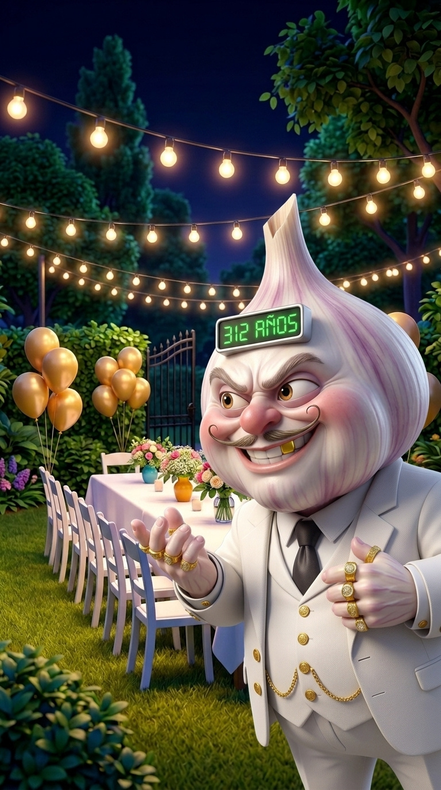
Mantén presionada la imagen para guardarla. En Flow súbela como fotograma inicial y elige 8s de duración.
Don Ajo: "Trato, abuela. Pero igual quiero ver ese número."
Archivo:
TAPA_E01_S13_v01.mp4
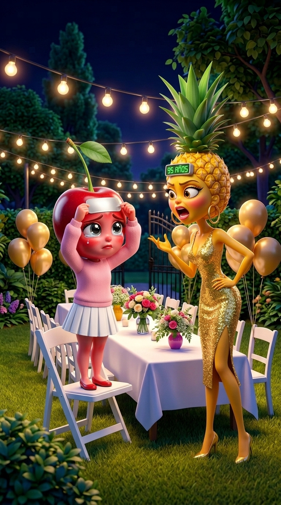
Mantén presionada la imagen para guardarla. En Flow súbela como fotograma inicial y elige 8s de duración.
Cerecita: "Si tengo cero, que todos lo vean."
Archivo:
TAPA_E01_S14_v01.mp4

OJO: Esta toma arranca donde termina la 14: en Flow abre el clip TAPA_E01_S14, ve al último cuadro y usa «Guardar fotograma» como fotograma inicial. La cámara se acerca a Cerecita.
Mantén presionada la imagen para guardarla. En Flow súbela como fotograma inicial y elige 10s de duración.
Cerecita: "¿Cuántos años crees que tengo debajo? Comenta y síguenos para más capítulos."
Archivo:
TAPA_E01_S15_v01.mp4